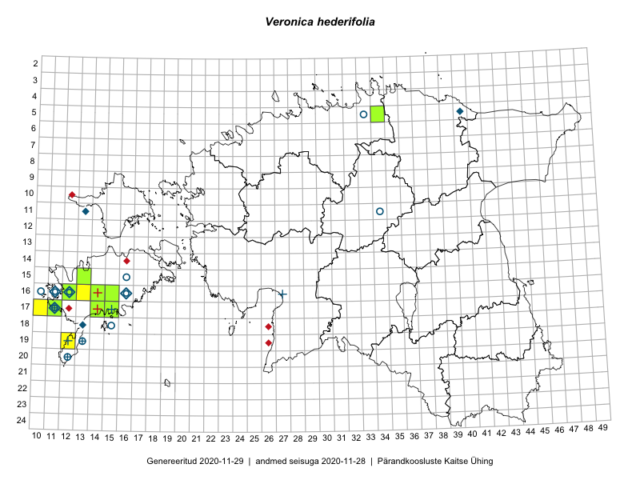

Veronica hederifolia
Uuendatud: 2016-12-02
Kaardile koondatud taksonid: Veronica hederifolia L.

Kaart põhineb 20 vaatlusel. Taksonit on leitud 10 ruudust.
Viited andmebaasikirjetele
- Mari Reitalu, Triin Reitalu: 2015-05-10: 17-10: GPS punkt
- Sirje Azarov, Aira Alasi: 2015-05-01: 16-14: ala
- Sirje Azarov, Aira Alasi: 2015-05-01: 16-14: GPS punkt
- Mari Reitalu, Sirje Azarov: 2015-05-09: 17-14: ala
- Mari Reitalu, Triin Reitalu: 2015-04-15: 16-12: ala
- Mari Reitalu, Triin Reitalu: 2015-04-15: 16-12: GPS punkt
- Mari Reitalu: 2015-06-16: 16-12: ala
- Mari Reitalu, Oliver Parrest: 2015-05-22: 16-13: ala
- Sirje Azarov, Aira Alasi: 2015-05-05: 17-15: ala
- Sirje Azarov, Aira Alasi: 2015-05-10: 17-15: GPS punkt
- Mari Reitalu, Oliver Parrest: 2015-05-14: 15-13: ala
- Oliver Parrest: 2015-05-16: 19-12: ala
- Mari Reitalu, Sirje Azarov: 2015-05-09: 17-14: GPS punkt
- Mari Reitalu, Triin Reitalu: 2015-05-08: 17-11: ala
- Mari Reitalu, Triin Reitalu: 2015-05-08: 17-11: GPS punkt
- Mari Reitalu, Triin Reitalu: 2015-04-30: 16-12: ala
- Meeli Mesipuu, Timo Luhamäe: 2015-06-12: 13-36: ala
- Mari Reitalu, Oliver Parrest: 2015-05-14: 15-13: GPS punkt
- Mari Reitalu, Oliver Parrest: 2015-05-22: 16-13: GPS punkt
- Triin Reitalu, Mari Reitalu: 2015-04-30: 16-12: GPS punkt